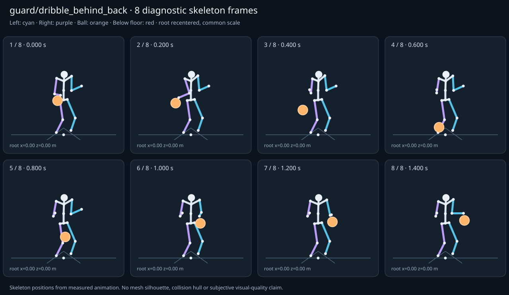

מה הוריד את הציון
- קפיצות פוזה: RightHand בזמן 0.3167 ש׳; קפיצת סיבוב שקולה 96.833 מעלות ב־60Hz (אדום)
- מגע בכדור: חסרים נתוני מדידה (Some declared contacts could not be sampled; partial observations cannot certify the full clip.)
- כניסה ויציאה מול המתנה: פער ב־יציאה מול המתנה; יחס חריגה 3.17 (אדום)
כיסוי: 86%. לא כל מדד חל על כל קליפ; הסטטוס והראיות מפורטים למטה.
שמונה פריימים
תצוגת שלד אבחונית שנבנתה מהפריימים הנמדדים. צד שמאל בכחול, ימין בסגול, כדור בכתום. מיקום השורש ממורכז לצפייה; מיקומו בעולם כתוב בכל פריים.

המדדים והראיות
| מדד | מצב | ערך | ציון | סף ופרטי מדידה |
|---|---|---|---|---|
| החלקת רגליים | ירוק | 0 height ratio | 100 | {
"definition": {
"label": "החלקת רגליים",
"unit": "height ratio",
"green": 0.01,
"yellow": 0.035,
"weight": 18,
"description": "Maximum horizontal sole displacement from the first sample of each declared support window, divided by character height. Inferred support is used only when no windows were supplied."
},
"value": 0,
"status": "green",
"score": 100,
"evidence": {
"coordinateSpace": "native GLB external Motion node (applied once)",
"supportSource": "declared",
"windows": 2,
"samples": 170,
"maxDriftMeters": 0,
"p95SpeedMetersPerSecond": 0,
"worst": {
"bone": "LeftFoot",
"t": 0.5,
"start": 0,
"end": 1.4,
"driftMeters": 0
}
}
} |
| חדירה לרצפה | ירוק | 0 height ratio | 100 | {
"definition": {
"label": "חדירה לרצפה",
"unit": "height ratio",
"green": 0.005,
"yellow": 0.02,
"weight": 15,
"description": "Maximum depth of the supplied sole probe points and all skeletal joint centers below the declared floor plane, divided by height. Sole probes are not a mesh collision audit."
},
"value": 0,
"status": "green",
"score": 100,
"evidence": {
"samples": 1700,
"floorY": 0,
"probeKind": "declared sole probes plus skeletal joint centers (no mesh surfaces)",
"maxDepthMeters": 0,
"worst": {
"t": 0,
"bone": "LeftFoot",
"depthMeters": 0,
"y": 0
}
}
} |
| קפיצות פוזה | אדום | 6.456 discontinuity ratio | 10 | {
"definition": {
"label": "קפיצות פוזה",
"unit": "discontinuity ratio",
"green": 1,
"yellow": 2.5,
"weight": 18,
"description": "Maximum adjacent 60 Hz-equivalent step: root-relative marker displacement / 0.04 height, root-relative rotation / 15 degrees, or root translation / 0.08 height. A fast continuous action can also exceed this screening threshold."
},
"value": 6.455532,
"status": "red",
"score": 10.44,
"evidence": {
"adjacentPairs": 84,
"observations": 1428,
"maxDegrees60Hz": 96.832981,
"maxMarkerStepHeight60Hz": 0.211962,
"maxRootStepHeight60Hz": 0,
"worst": {
"ratio": 6.455532089148041,
"t": 0.316667,
"previousTime": 0.3,
"bone": "RightHand",
"markerStepHeight60Hz": 0.138106,
"degrees60Hz": 96.832981
}
}
} |
| חריגות אנטומיות | ירוק | 0 % affected frames | 100 | {
"definition": {
"label": "חריגות אנטומיות",
"unit": "% affected frames",
"green": 0.5,
"yellow": 3,
"weight": 14,
"description": "Percentage of frames with elbow or knee flexion above 165 degrees, neck bend above 80 degrees, or a segment length changing by more than 5%. Optional calibrated hinge checks detect reverse knee flexion above 8 degrees. Conservative marker limits do not diagnose axial joint twist."
},
"value": 0,
"status": "green",
"score": 100,
"evidence": {
"testedFrames": 85,
"affectedFrames": 0,
"checks": 1445,
"maxLimbFlexionDegrees": 128.240295,
"maxRelativeSegmentLengthChange": 0,
"hingeDirectionChecked": true,
"axialTwistChecked": false,
"violations": []
}
} |
| מגע בכדור | אין די נתונים | — height ratio | — | {
"definition": {
"label": "מגע בכדור",
"unit": "height ratio",
"green": 0.015,
"yellow": 0.05,
"weight": 13,
"description": "Maximum absolute distance from the ball surface to the sampled, bone-transformed declared contact point, divided by height. Events are evaluated at their exact declared times by interpolation."
},
"value": null,
"status": "insufficient-data",
"score": null,
"reason": "Some declared contacts could not be sampled; partial observations cannot certify the full clip.",
"evidence": {
"radiusMeters": 0.12,
"samples": 44,
"missed": [
{
"bone": "LeftHand",
"t": 1.4,
"reason": "outside sampled interval"
}
],
"contacts": [
{
"t": 0.183333,
"bone": "RightHand",
"gapMeters": 0.005199,
"signedGapMeters": 0.005199,
"centerDistanceMeters": 0.125199,
"contactPoint": [
-0.401027,
0.948553,
-0.040685
],
"ballCenter": [
-0.386475,
0.824246,
-0.037407
],
"declaredLocalPoint": true
},
{
"t": 0.15,
"bone": "RightHand",
"gapMeters": 0.003255,
"signedGapMeters": 0.003255,
"centerDistanceMeters": 0.123255,
"contactPoint": [
-0.394174,
0.977437,
0.050401
],
"ballCenter": [
-0.38,
0.855,
0.05
],
"declaredLocalPoint": true
},
{
"t": 0.116667,
"bone": "RightHand",
"gapMeters": 0.002096,
"signedGapMeters": -0.002096,
"centerDistanceMeters": 0.117904,
"contactPoint": [
-0.375495,
1.00364,
0.138096
],
"ballCenter": [
-0.373525,
0.885754,
0.137407
],
"declaredLocalPoint": true
},
{
"t": 0.083333,
"bone": "RightHand",
"gapMeters": 0.001981,
"signedGapMeters": -0.001981,
"centerDistanceMeters": 0.118019,
"contactPoint": [
-0.368374,
1.031398,
0.216203
],
"ballCenter": [
-0.367709,
0.913381,
0.215926
],
"declaredLocalPoint": true
},
{
"t": 0.216667,
"bone": "RightHand",
"gapMeters": 0.001413,
"signedGapMeters": -0.001413,
"centerDistanceMeters": 0.118587,
"contactPoint": [
-0.393405,
0.915198,
-0.11526
],
"ballCenter": [
-0.392291,
0.796619,
-0.115926
],
"declaredLocalPoint": true
},
{
"t": 1.15,
"bone": "LeftHand",
"gapMeters": 0.001337,
"signedGapMeters": -0.001337,
"centerDistanceMeters": 0.118663,
"contactPoint": [
0.38792,
0.939025,
-0.048283
],
"ballCenter": [
0.387292,
0.820365,
-0.048437
],
"declaredLocalPoint": true
},
{
"t": 1.116667,
"bone": "LeftHand",
"gapMeters": 0.001242,
"signedGapMeters": -0.001242,
"centerDistanceMeters": 0.118758,
"contactPoint": [
0.392144,
0.918231,
-0.107925
],
"ballCenter": [
0.39169,
0.799473,
-0.107813
],
"declaredLocalPoint": true
},
{
"t": 1.183333,
"bone": "LeftHand",
"gapMeters": 0.001232,
"signedGapMeters": -0.001232,
"centerDistanceMeters": 0.118768,
"contactPoint": [
0.383549,
0.961998,
0.016847
],
"ballCenter": [
0.382477,
0.843235,
0.016562
],
"declaredLocalPoint": true
},
{
"t": 1.283333,
"bone": "LeftHand",
"gapMeters": 0.001182,
"signedGapMeters": 0.001182,
"centerDistanceMeters": 0.121182,
"contactPoint": [
0.373746,
1.031587,
0.207778
],
"ballCenter": [
0.36831,
0.910527,
0.207813
],
"declaredLocalPoint": true
},
{
"t": 0.05,
"bone": "RightHand",
"gapMeters": 0.001121,
"signedGapMeters": -0.001121,
"centerDistanceMeters": 0.118879,
"contactPoint": [
-0.363428,
1.053632,
0.276817
],
"ballCenter": [
-0.36321,
0.934753,
0.276667
],
"declaredLocalPoint": true
},
{
"t": 1.083333,
"bone": "LeftHand",
"gapMeters": 0.001002,
"signedGapMeters": -0.001002,
"centerDistanceMeters": 0.118998,
"contactPoint": [
0.395744,
0.900878,
-0.158127
],
"ballCenter": [
0.395394,
0.781881,
-0.157813
],
"declaredLocalPoint": true
},
{
"t": 0.25,
"bone": "RightHand",
"gapMeters": 0.000886,
"signedGapMeters": -0.000886,
"centerDistanceMeters": 0.119114,
"contactPoint": [
-0.397022,
0.89436,
-0.176345
],
"ballCenter": [
-0.39679,
0.775247,
-0.176667
],
"declaredLocalPoint": true
},
{
"t": 1.216667,
"bone": "LeftHand",
"gapMeters": 0.000694,
"signedGapMeters": -0.000694,
"centerDistanceMeters": 0.119306,
"contactPoint": [
0.379906,
0.986047,
0.08343
],
"ballCenter": [
0.377523,
0.866765,
0.083437
],
"declaredLocalPoint": true
},
{
"t": 1.25,
"bone": "LeftHand",
"gapMeters": 0.000627,
"signedGapMeters": 0.000627,
"centerDistanceMeters": 0.120627,
"contactPoint": [
0.378045,
1.010143,
0.147833
],
"ballCenter": [
0.372708,
0.889635,
0.148438
],
"declaredLocalPoint": true
},
{
"t": 1.05,
"bone": "LeftHand",
"gapMeters": 0.000582,
"signedGapMeters": -0.000582,
"centerDistanceMeters": 0.119418,
"contactPoint": [
0.398347,
0.888324,
-0.194978
],
"ballCenter": [
0.398125,
0.768906,
-0.194688
],
"declaredLocalPoint": true
},
{
"t": 1.316667,
"bone": "LeftHand",
"gapMeters": 0.000299,
"signedGapMeters": 0.000299,
"centerDistanceMeters": 0.120299,
"contactPoint": [
0.366893,
1.048396,
0.258131
],
"ballCenter": [
0.364606,
0.928119,
0.257813
],
"declaredLocalPoint": true
},
{
"t": 0.016667,
"bone": "RightHand",
"gapMeters": 0.000257,
"signedGapMeters": -0.000257,
"centerDistanceMeters": 0.119743,
"contactPoint": [
-0.360701,
1.066485,
0.310786
],
"ballCenter": [
-0.360686,
0.946742,
0.310741
],
"declaredLocalPoint": true
},
{
"t": 0.283333,
"bone": "RightHand",
"gapMeters": 0.000153,
"signedGapMeters": -0.000153,
"centerDistanceMeters": 0.119847,
"contactPoint": [
-0.399327,
0.883105,
-0.210703
],
"ballCenter": [
-0.399314,
0.763258,
-0.210741
],
"declaredLocalPoint": true
},
{
"t": 1.016667,
"bone": "LeftHand",
"gapMeters": 0.00008,
"signedGapMeters": -0.00008,
"centerDistanceMeters": 0.11992,
"contactPoint": [
0.399653,
0.881789,
-0.214736
],
"ballCenter": [
0.399606,
0.761869,
-0.214687
],
"declaredLocalPoint": true
},
{
"t": 1.35,
"bone": "LeftHand",
"gapMeters": 0.000052,
"signedGapMeters": -0.000052,
"centerDistanceMeters": 0.119948,
"contactPoint": [
0.362569,
1.061039,
0.294864
],
"ballCenter": [
0.361875,
0.941094,
0.294687
],
"declaredLocalPoint": true
}
],
"contactDetailsTruncated": true,
"coordinateSpace": "native GLB external Motion node (applied once)",
"observedValue": 0.002765,
"observedStatus": "green",
"observationCoverage": 0.9777777777777777
},
"partial": true
} |
| כניסה ויציאה מול המתנה | אדום | 3.17 continuity ratio | 49 | {
"definition": {
"label": "כניסה ויציאה מול המתנה",
"unit": "continuity ratio",
"green": 1,
"yellow": 3,
"weight": 10,
"description": "Worst entry/exit mismatch to the best matching idle phase: RMS marker error / 0.04 height, RMS bone rotation / 25 degrees, or RMS endpoint velocity error / 0.75 height per second. Horizontal root translation is aligned; root height and body pose remain measurable."
},
"value": 3.170001,
"status": "red",
"score": 48.58,
"evidence": {
"entry": {
"ratio": 3.1088726634807986,
"t": 0,
"idleTime": 0,
"markers": 17,
"rmsPositionHeight": 0.124355,
"rmsRotationDegrees": 56.91204,
"rmsVelocityHeightPerSecond": 0.117609,
"velocityEvaluated": true
},
"exit": {
"ratio": 3.170001113412407,
"t": 1.4,
"idleTime": 0,
"markers": 17,
"rmsPositionHeight": 0.1268,
"rmsRotationDegrees": 42.363458,
"rmsVelocityHeightPerSecond": 0.091861,
"velocityEvaluated": true
},
"worstEndpoint": "exit",
"alignment": "horizontal root translation; raw asset poses used when provided"
}
} |
| מהירות גוף מול צעדים | לא חל | — relative speed error | — | {
"definition": {
"label": "מהירות גוף מול צעדים",
"unit": "relative speed error",
"green": 0.2,
"yellow": 0.5,
"weight": 8,
"description": "Relative difference between average root travel speed and the median backward support-foot sweep speed relative to the root. Cadence and implied stride lengths are also reported. In-place clips need an explicit reference travel scenario; stationary actions are not scored as locomotion."
},
"value": null,
"status": "not-applicable",
"score": null,
"reason": "This action is not declared locomotion.",
"evidence": {}
} |
| סימטריה | ירוק | 0 relative mismatch | 100 | {
"definition": {
"label": "סימטריה",
"unit": "relative mismatch",
"green": 0.03,
"yellow": 0.1,
"weight": 4,
"description": "Maximum bilateral segment-length mismatch. Looping locomotion additionally compares reflected half-cycle leg markers; explicit pose symmetry compares simultaneous bilateral markers. One-sided actions retain unscored motion diagnostics, so a valid kick or dribble arm is not penalized for intentional asymmetry."
},
"value": 0,
"status": "green",
"score": 100,
"evidence": {
"mode": "structural",
"modeSource": "structural default for intentional asymmetry",
"structuralMismatch": 0,
"segments": [
{
"segment": "Arm-ForeArm",
"mismatch": 0
},
{
"segment": "ForeArm-Hand",
"mismatch": 0
},
{
"segment": "UpLeg-Leg",
"mismatch": 0
},
{
"segment": "Leg-Foot",
"mismatch": 0
}
],
"motionRmsHeight": null,
"worstMotion": null,
"bilateralPoseRmsHeightUnscored": 0.067306,
"note": "One-sided authored actions are checked for structural symmetry only."
}
} |